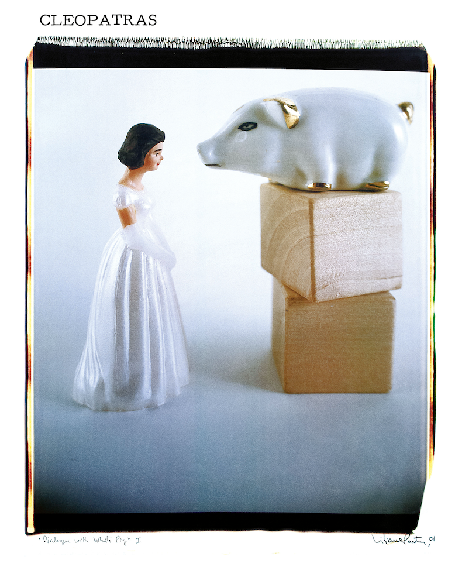
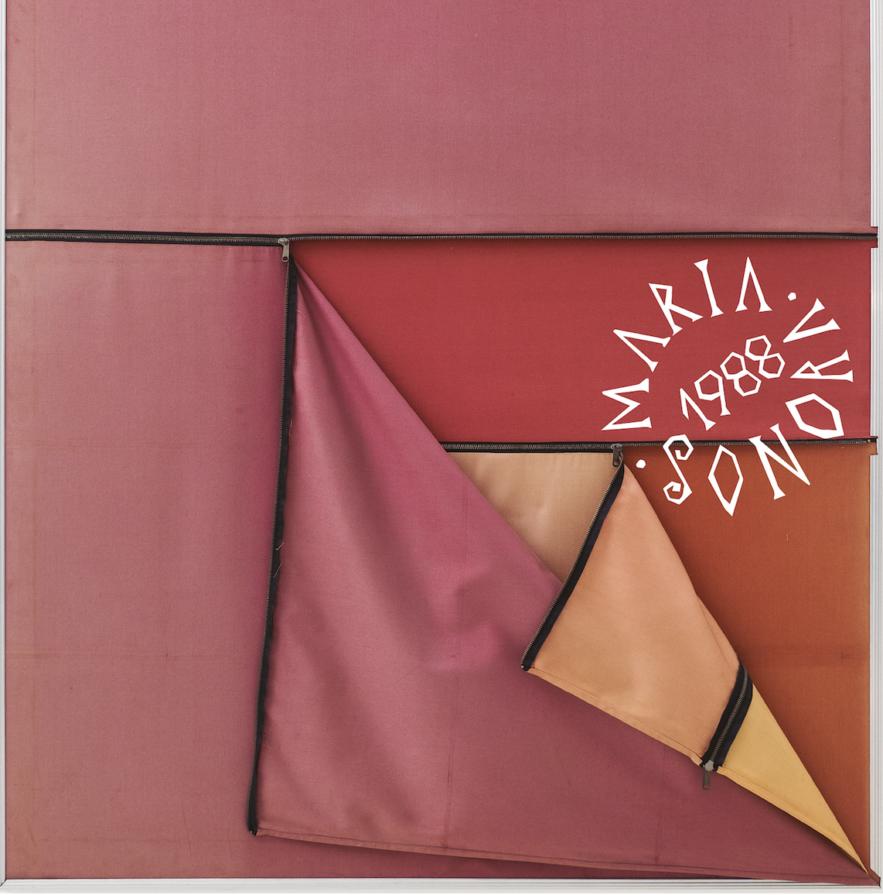

The Design District Museum joins ISLAA and Hueso Records on Plan /33, a limited-edition vinyl series that preserves and reimagines Latin American underground music.
The Institute for Studies in Latin American Art (ISLAA), ICA Miami, and Hueso Records unveiled a collaborative project titled Plan /33, an editioned series of 33 limited-edition vinyl records by ’80s Latin American underground musicians. The records will be available for sale at ICA Miami’s bookstore, in ISLAA’s New York bookshop, and online at hueso-records.com. Only 250 vinyls of each edition will be produced.
ICA may seem like a surprising venue for such a project. Ivan Navarro, founder of Hueso Records, discussed the collaboration with New Times: “We discussed with ISLAA the possibility of working with other institutions that could strategically expand Plan /33’s audience. Now we are collaborating with ICA/Miami, with its generous support, to promote the work in a broader context, given its proximity to Latin America. This research is unprecedented in the U.S., and since the music also shows a significant Anglo-Saxon influence, I feel it is important for the two institutions to collaborate on a symbolic level as well.” When you consider the contemporary art museum’s function of recontextualizing and reimagining art in various forms, researched and curated archival music is actually a natural fit. What’s more, these aren’t simply releases of old records; the cover art for each album will feature works from a selection of contemporary Latin American visual artists. So far, Plan /33 has released two albums, both from Chilean underground artists.
01/33 (the first of the 33 albums) is by Cleopatras, a Chilean multidisciplinary performance group started in the later years of the Pinochet regime. By including demos and unreleased music, it provides additional insight into an already niche band that belongs to the global culture of gritty, underground art made under — and despite? — the controls of fascism. On the underground nature of the selected albums, Navarro commented, “It was Ariel Aisiks — founder of ISLAA — who suggested extending the research to all of Latin America during the dictatorships that took place there, a period that produced a great deal of music specifically created to resist censorship. We added a new element: the cover of each album features an artwork by a Latin American artist, of a different nationality than the band, that somehow interprets the album’s content. I think of Plan /33 as a sort of Bolivarian dream of global integration, or, ironically, as the underground soundtrack of resistance to Operation Condor.” The cover for this album is by Argentine contemporary artist Liliana Porter and is titled “Dialogue with a Pig”; it features an image of two porcelain figurines (one of a cartoonish, white pig, and one of a young woman) facing one another, with the pig figurine sitting on two wooden blocks that leave it just above the other figurine’s head. The image has a pared-back saccharine, grainy quality to it, potentially referencing the punchy feminist quality of this girl group’s music.

02/33, Maria Sonoras, features the “long unreleased debut by Maria Jose and Sebastian “Tan” Levine… a prescient mix of funk, hip-hop, cumbia, and electronic experimentation”. Amongst other things, the album is a reminder that Latin American music does not exist in a vacuum, and that global Latin music is not exclusive to today’s reggaeton pop charts. Not only does this album include genres from different parts of the world, but it was mixed in Tokyo, further adding to Japan’s long love affair with Latin music across genres. Much of this music from oppressive times lived under American-backed dictators also clearly has influences from the English-speaking world, Navarro says, “There is a clear precedent for music created under repressive political conditions, music that blended Anglo-Saxon and Latin American influences during the Cold War in Latin America. Perhaps driven by isolation and the forced exile of musicians, this served as a form of protest.”

Over the past several years, I’ve observed musicians reimagining old classics, working personal archival collections of records, and regularly sampling several old hits (sometimes several in one song) to make something new. From pop and reggaeton stars like Rauw Alejandro or Nathy Peluso singing salsa classics, to DJs like Gia Fu or local artist Akia Dorsainvil (stage name Pressure Point, founder of Masisi Radio) positioning themselves as researchers and archivists rather than simply artists, bringing back old music/ and rediscovering artists lost to the past is somehow at once referential and vanguard. Plan /33 is one of the latest examples of applying art historical and curatorial lenses onto music, and producing a project that seems to toe the line between contemporary visual art and music in an affordable and approachable fashion. With regard to the future of Plan /33, the next two albums will feature Uruguayan artists and will be unveiled in December.